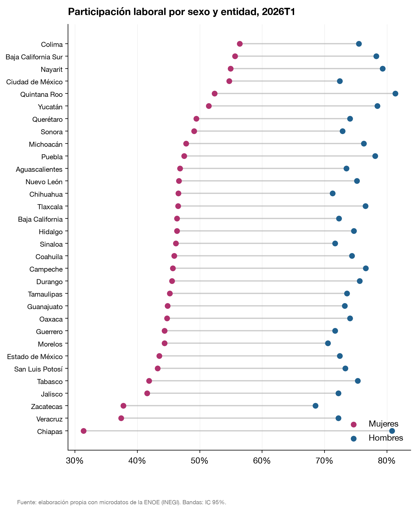
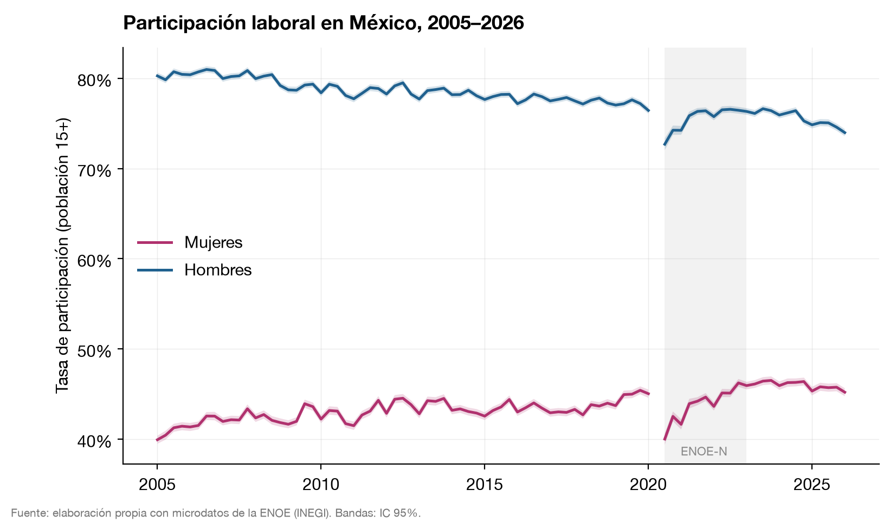
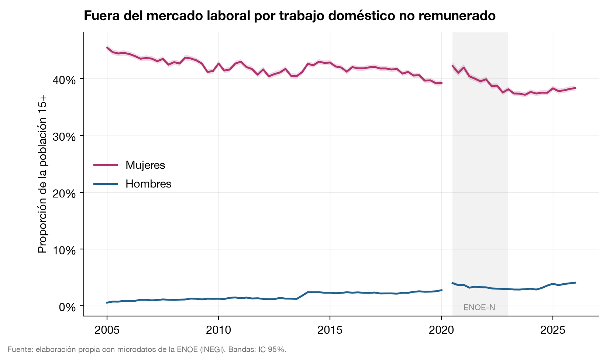

Open research · ENOE
Gender gaps in the Mexican labor market
Twenty-one years of Mexico's official labor-force survey, ~34 million person-records, turned into gender-gap indicators for every state and every quarter: participation, pay, informality, and unpaid care, each with survey-design-correct uncertainty.
The questionWhere, exactly, is the gap?
Mexico debates female participation policy with national averages. But the gaps that matter are local and structural: the difference between a woman's labor market in Chiapas and in Colima is larger than the difference between Mexico and most OECD countries. This project builds the missing measurement layer, so a policy team can see any state, any quarter, any indicator, and tell a real change from survey noise.
ExploreThe dashboard, live
Every indicator by state and quarter, with 95% confidence bands. Open full screen.
Finding 1Geography is the story
In 2026Q1, 31.4% of women in Chiapas participate in the labor force, against 80.8% of Chiapas men. Northern and coastal states run 20+ points higher for women. A national average hides most of the problem, and most of the policy opportunity.

Finding 2A record with an asterisk
Female participation reached a series record of 46.5% in late 2023 and stands at 45.2% today, up from 39.9% in 2005. The shaded band marks the pandemic-era survey redesign: this pipeline flags it in every chart, so a real recovery can be separated from a measurement artifact. Men's participation has declined six points over the same two decades; the gap narrows from both ends.

Finding 3The engine of the gap is unpaid care
Among working-age people out of the labor force, 38.3% of women are out because of unpaid domestic work; for men the figure is 4.1%. Meanwhile informality is nearly identical by sex (55.3% vs 54.4%). Women are not in worse jobs than men so much as kept out of jobs entirely, which points policy at care infrastructure, not just labor-market rules.

MethodBuilt to be checked
One command reproduces everything from INEGI's public microdata: 84 quarters harmonized across every survey redesign, estimates with Taylor-linearized variances honoring the survey design, and external validation that reproduces INEGI's official bulletin within rounding. No microdata are redistributed.
ResumenEn español
Veintiún años de la ENOE convertidos en indicadores de brechas de género por entidad y trimestre. Tres hallazgos: la participación femenina tocó su récord (46.5% en 2023) y aún queda ~29 puntos debajo de la masculina; la geografía manda (Chiapas: 31.4% de las mujeres vs 80.8% de los hombres); y el mecanismo es el trabajo de cuidados no remunerado, la razón de inactividad del 38.3% de las mujeres fuera de la fuerza laboral, contra 4.1% de los hombres. Tablero interactivo · Código y metodología.